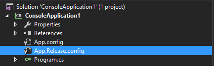
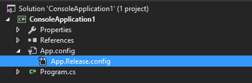
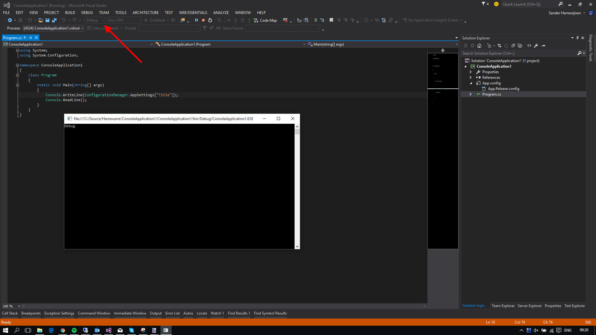
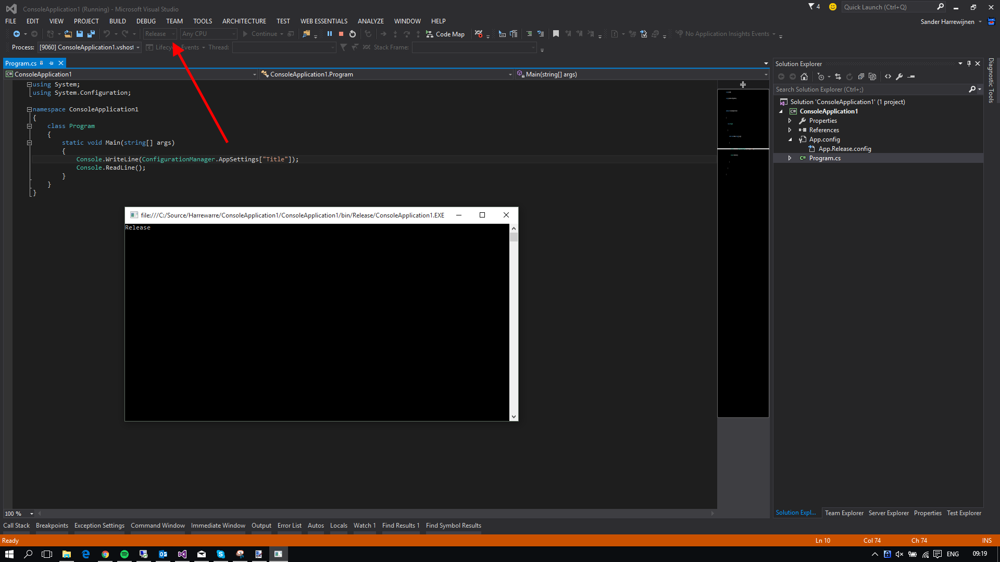

App.config xdt transforms
Here is a little hack you can do to enable transformations in app.config like you can in your web.config.
A quick intro to transformations, they can make your life a bit easier by storing different configs in different files that, depending on your build configuration, end up in the actual config file. Here is a simple example.
This is the original web.config file:
<?xml version="1.0" encoding="utf-8" ?>
<configuration>
<appSettings>
<add key="SomeSetting" value="true" />
<add key="Title" value="Debug" />
</appSettings>
</configuration>
And there is also a web.Release.config, that looks like this:
<?xml version="1.0" encoding="utf-8" ?>
<configuration xmlns:xdt="http://schemas.microsoft.com/XML-Document-Transform">
<appSettings>
<add key="Title" value="Release" xdt:Transform="Replace" xdt:Locator="Match(key)" />
</appSettings>
</configuration>
They look the same, but the web.Release.config declares transformations that can act on the original web.config file. So when we switch the configuration to Release to create a different build in Visual Studio, we get a different config file that is transformed based on the transformations in the matching web.Release.config file.
The resulting web.config will look like this when a Release build is done:
<?xml version="1.0" encoding="utf-8" ?>
<configuration>
<appSettings>
<add key="SomeSetting" value="true" />
<add key="Title" value="Release" />
</appSettings>
</configuration>
And will be left unchanged on a Debug build.
These transforms work for any ASP.NET web application by default. No changes needed, it just works. For other applications types however, they don’t work. So why do this yourself? There is Slow Cheetah that solved this problem already. Yes, but sadly… Slow Cheetah is no longer updated and will not receive updates to work with Visual Studio 2015. There is a pretty big demand to have the transforms work in any XML file, but until then, we’ll have to do it ourselves. So much for the transforms themselves, lets dive in to the subject at hand!
If you create a new console app, you will get an App.config by default. When you add another config file, it will be created as App1.config and will not be linked to the existing config that is already in the project. Lets fix that first. Rename the App1.config file to App.Release.config.

Here is the first hacky part. Unload the project and edit the csproj file manually. Look for an ItemGroup that looks like this:
<ItemGroup>
<None Include="App.config" />
<None Include="App.Release.config" />
</ItemGroup>
And change it to this:
<ItemGroup>
<None Include="App.config" />
<None Include="App.Release.config">
<DependentUpon>App.config</DependentUpon>
</None>
</ItemGroup>
Save and close the file and reload the project. It should now look like this:

It now looks like its web.config sibling, but we’re not quite there yet. We still need to enable transforms. Unload the project again and edit the csproj file.
Look for this line:
<Import Project="$(MSBuildToolsPath)\Microsoft.CSharp.targets" />
And paste this whole blob under that line:
<UsingTask TaskName="TransformXml" AssemblyFile="$(MSBuildExtensionsPath)\Microsoft\VisualStudio\v14.0\Web\Microsoft.Web.Publishing.Tasks.dll" />
<Target Name="AfterCompile" Condition="exists('app.$(Configuration).config')">
<TransformXml Source="app.config" Destination="$(IntermediateOutputPath)$(TargetFileName).config" Transform="app.$(Configuration).config" />
<ItemGroup>
<AppConfigWithTargetPath Remove="app.config" />
<AppConfigWithTargetPath Include="$(IntermediateOutputPath)$(TargetFileName).config">
<TargetPath>$(TargetFileName).config</TargetPath>
</AppConfigWithTargetPath>
</ItemGroup>
</Target>
So what does that even mean? Well, it instructs MSBuild to run a task named TransformXml that lives in Microsoft.Web.Publishing.Tasks.dll when compilation of the code completes. It then renames the App.<configuration>.config file to App.config and moves it to the correct folder.
One word of caution though, if you run this build through a CI system like Jenkins, you need the Microsoft.Web.Publishing.Tasks.dll available on the machine that builds the code! If its not there, transformations will not be executed. The easiest fix is to install Visual Studio on the target build machine but you could also manually create the right folders and files by hand as long as you can match this path: $(MSBuildExtensionsPath)\Microsoft\VisualStudio\v14.0\Web\Microsoft.Web.Publishing.Tasks.dll. Also note the v14.0 in there, this points to an installation of Visual Studio 2015! Other versions of Visual Studio have the DLL in different a folder.
If you put the transforms from the web.config we started with in the App.config and App.Release.config we can take it for a spin.
Here is what I’m running in the console app: (Don’t forget the reference to System.Configuration)
using System;
using System.Configuration;
namespace ConsoleApplication1
{
class Program
{
static void Main(string[] args)
{
Console.WriteLine(ConfigurationManager.AppSettings["Title"]);
Console.ReadLine();
}
}
}
Running in the Debug configuration produces this output:

And Release produces this:

And with that, we have transforming App.config files! Take care when automating your builds, but otherwise, you are good to go!